90년대 아케이드 陣取り(진토리)로 사진을 열고,
퍼즐 중 그녀의 야한 질문에 답하고,
마지막엔 최고 등급 엔딩을 뽑음.
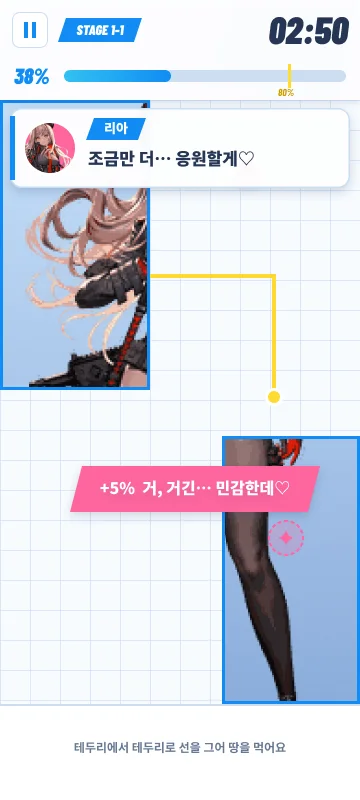
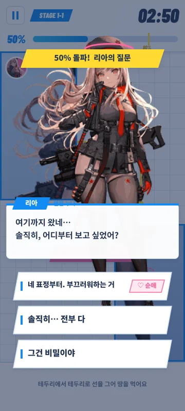
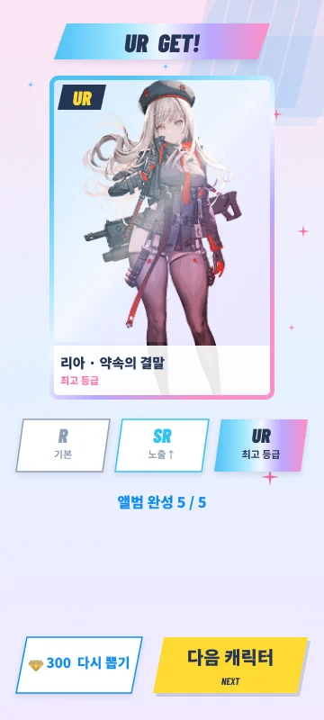
고르고 → 퍼즐 중 대화하며 열고 → 다음 사진을 기대하고 → 엔딩 가챠. 7화면이 한 판 전체. 시간 초과 · 이어하기는 흐름 밖 수익화 화면(C-1)으로 분리.
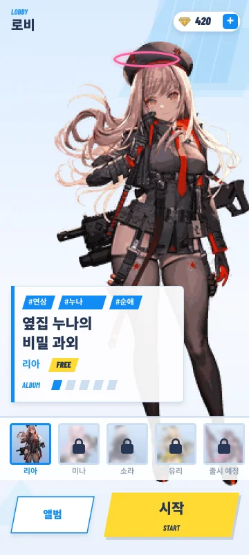
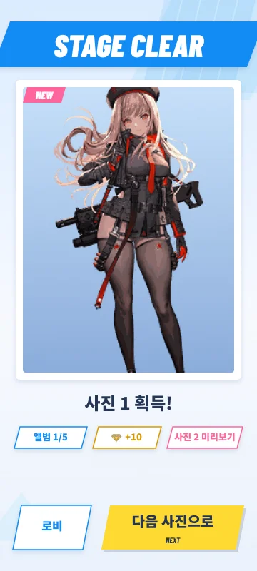
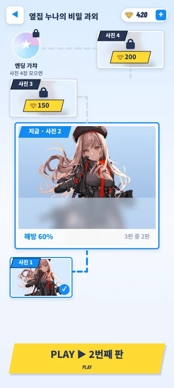
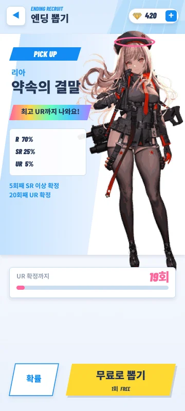
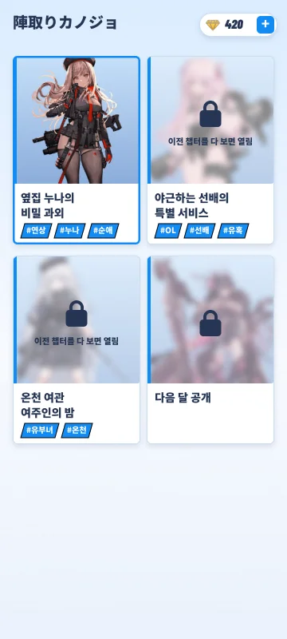
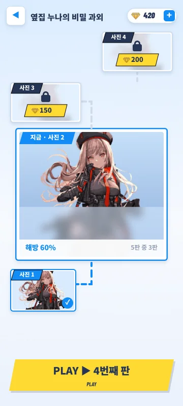
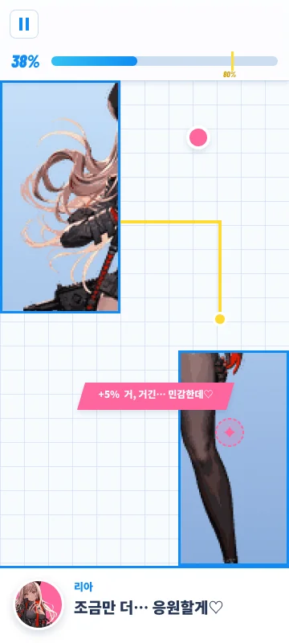
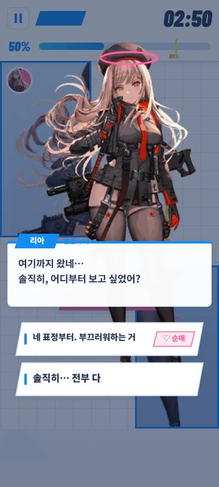
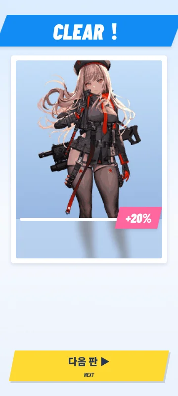
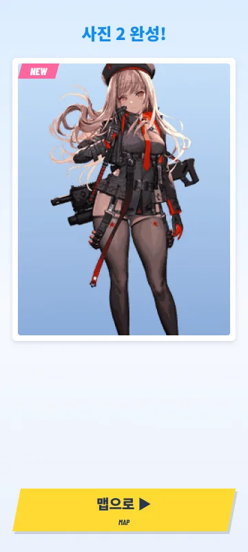
요소 하나하나는 이미 있음. 엣지는 '퍼즐 안에서 벌어지는 대화 + 관계 게이트 + 등급 뽑기'의 조합.
| 비교 대상 | 핵심 재미 | 세션 | 과금 | 한계 |
|---|---|---|---|---|
| 陣取り(진토리) 탈의 게임 (ギャルズパニック 1990~ · 최근 モココX 2022) | 영역을 먹으면 그림 공개 | 짧음 | 단품 구매 | 공개 후 끝 · 관계·재방문 동기 없음 |
| FANZA 대형 F2P (RPG · 전략 가챠) | 캐릭터 수집 · 전투 성장 | 김 | 캐릭터 가챠 | 진입 장벽 · 성장 피로 |
| AI 연애 챗 앱 | 대화 · 호감도 단계 | 중간 | 대화 횟수 · 보이스 · 이미지 | 게임성 약함 · 보상 체감 약함 |
| 陣取りカノジョ (진토리 카노조 · 땅따먹기 그녀) | 퍼즐 중 질문 · 응원 대사로 사진 공개 → 젬으로 다음 사진 → 엔딩 등급 뽑기 | 짧음 (1판 1~2분 [E]) | 재화 1종 · 엔딩 뽑기 중심 | 콘텐츠 소진이 빠름 → 5장 참고 |
陣取り 탈의 장르의 원조는 Kaneko 'Gals Panic'(1990, Qix 방식 · 다수 클론 존재). 일본에서 陣取り 게임은 Qix · ヴォルフィード · ギャルズパニック 등 80~90년대 아케이드·게임보이 세대의 추억으로 통하고, 2022년 'モココX'도 '懐かしい陣取りアーケード'로 소개됨. FANZA 대형 F2P · AI 챗 앱의 과금 구조는 공개 소개 자료 기준 요약 — 경쟁작 선정과 수치는 추가 확인 필요.
① 퍼즐 도중 그녀가 말을 걸고 ② 대답이 영역을 열거나 가리고 ③ 사진을 모을수록 다음 컷이 궁금해지고, 4장이면 최고 수위 엔딩 뽑기.
별도 채팅 화면 없음. 땅을 먹는 손이 멈추지 않게 대화를 퍼즐 속에 녹임.
첫 뽑기는 무료. 더 높은 등급이 보이므로 한 번 더 뽑게 됨.
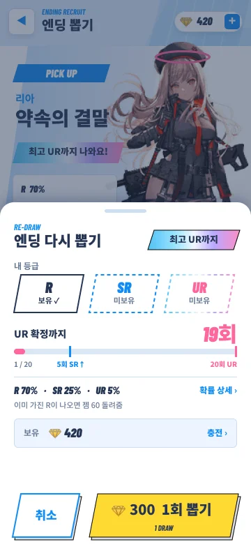
기다리기 싫을 때, 거의 다 열었을 때, 말실수했을 때, 더 높은 엔딩이 보일 때.
모든 캐릭터 첫 사진은 무료. 사진 2 / 3 / 4 = 100 / 150 / 200 (캐릭터당 450).
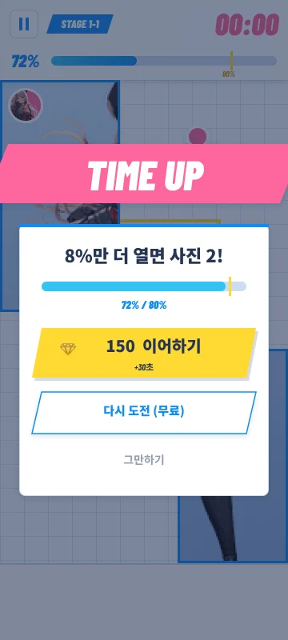
사진 직전 실패에서 +30초 (흐름 밖 C-1). 퍼즐 결제 지점은 이것 하나 · 매출 비중은 작게 봄. 첫 결제 스타터 팩 ¥980.
퍼즐 중 질문에서 싫어하는 답을 골랐을 때. 하루 1회 무료.
R 70 · SR 25 · UR 5%. 5회째 SR↑ · 20회째 UR 확정.
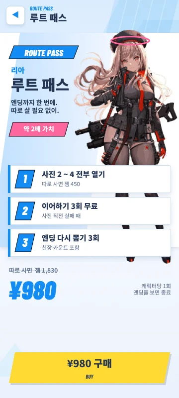
위 세 가지를 한 번에. 캐릭터당 1회.
1 ≈ ¥1 (상점 기준). UR까지 가는 결제 유저 가정.
| 엔딩 다시 뽑기 — UR까지 평균 11.8회 (UR 5% · 20회째 확정) | ≈ ¥3,550 |
| 이어하기 — 사진 4장 중 2번 사용 가정 | ≈ ¥300 |
| 되돌리기 — 하루 3회 · 4일 가정 | ≈ ¥240 |
| 사진 2 · 3 · 4 열기 — 첫 클리어 보상 젬 약 100 차감 | ≈ ¥350 |
| 합계 · 캐릭터 1명당 | ≈ ¥4,400 |
캐릭터당 결과가 R · SR · UR 3개뿐이라 한 캐릭터에서 쓸 수 있는 돈에 상한이 있음 → 매출은 '결제 유저 수 × 캐릭터 추가 속도'에 비례.
돈 내는 이유를 '운이 나빠서'가 아니라 '더 빨리, 더 높이'로 바꿈.
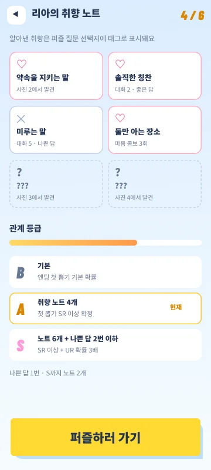
알아낸 취향이 선택지에 태그로 표시됨. 맞히는 건 실력. 노트 화면 v1.2
나쁜 답 = 싫어하는 취향 공개. 되돌리기 하루 1회 무료. 콤보 v1.2
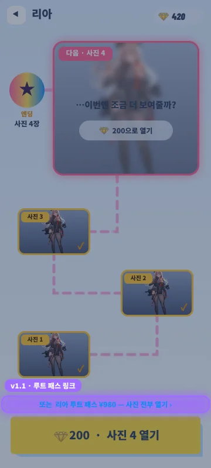
되돌리기 매일 +3 · 이어하기 3 · 다시 뽑기 3을 한 번에. 구매 제안은 세션당 1회.
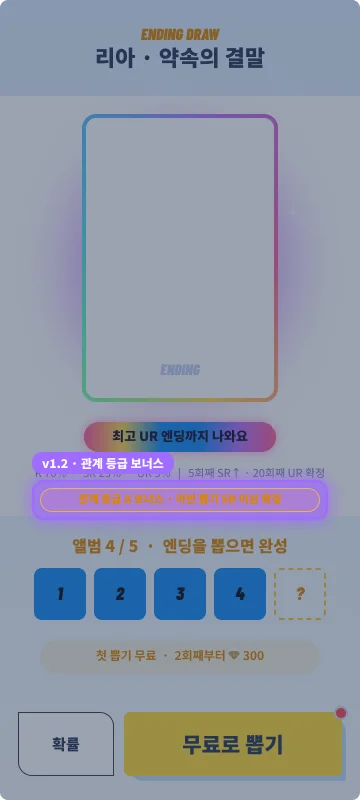
A = 첫 뽑기 SR 이상 확정 · S = UR 확률 3배. 잘할수록 높은 등급.
2연속 실패 → 다음 판 시작 영역 +10%. 무료.
퍼즐 1 · 질문 대답 3 · 앨범 보기. 캐릭터 한 명 끝낼 때쯤 다시 뽑기 1회분.
한 판 흐름 7화면 + 흐름 밖 4화면(이어하기 · 다시 뽑기 · 상점 · 앨범). 기획서의 모든 화면은 런칭 빌드 기준 (업데이트 요소 제외).
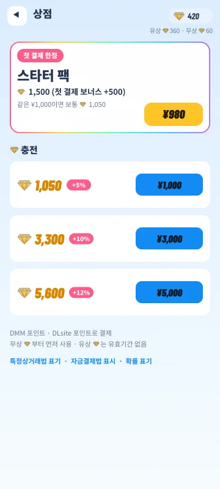
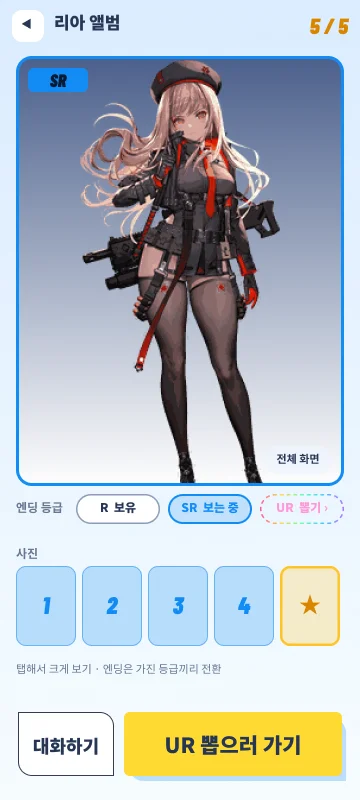
캐릭터 4명 (첫 1명 무료)
캐릭터당 스탠딩 1 · 사진 4 · 엔딩 1구도 (R/SR/UR 차분)
퍼즐 10판 · 판당 질문 1개 + 응원 · 핫스폿 대사 (고정 시나리오, LLM 없음)
퍼즐 중 질문 · 응원 · 핫스폿 · 챕터 맵(다음 사진 미리보기)
땅따먹기 퍼즐 (입장 무료 · 부스터 슬롯 잠금 표시) · 이어하기 · 2연속 실패 도움 모드
사진 열기(첫 사진 무료 · 이후 젬) · 취향 태그 · 되돌리기 하루 1회 무료 · 친밀도 수치 없음
엔딩 뽑기: 첫 1회 무료 · 확률 + 스텝업
재화는 젬 하나 (유료 구매분 · 무료 지급분 내부 구분)
되돌리기 하루 1회 무료 → 이후 20
모든 캐릭터 처음부터 열림 · 첫 클리어 판마다 젬 +10
상점 3팩(¥1,000 · 3,000 · 5,000) + 스타터 팩 · 플랫폼 포인트 결제
UR = 정지 일러 + 자동으로 흐르는 무지개빛 (센서 없음)
플랫폼 로그인 · 결제 SDK · 서버 세이브
확률 표기 · 특상법 · 자금결제법 표기 · 컴프가챠 없음
런칭 화면 위에 추가되는 UI만 밝게 표시함 (어두운 부분 = 런칭 그대로). 각 버전에 '이 지표가 나쁘면 앞당김' 조건을 붙임.
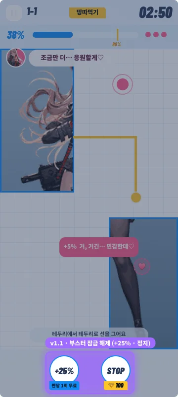
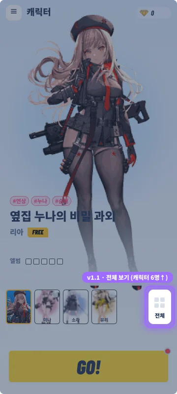
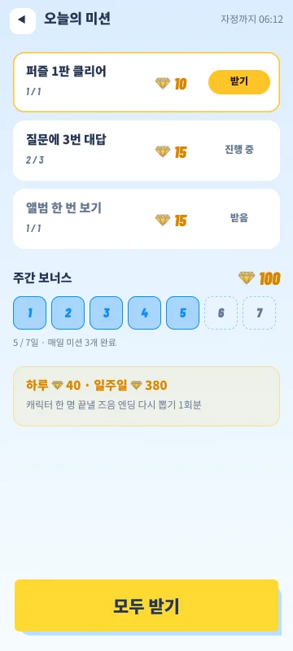
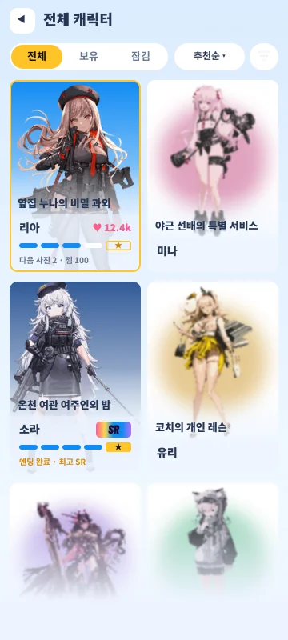
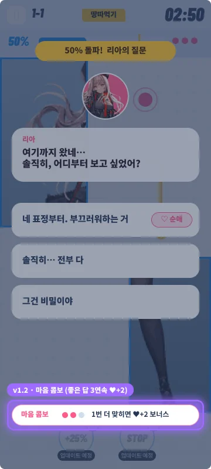
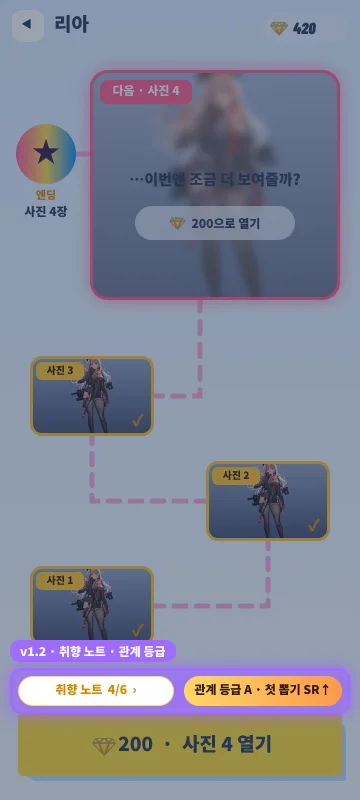
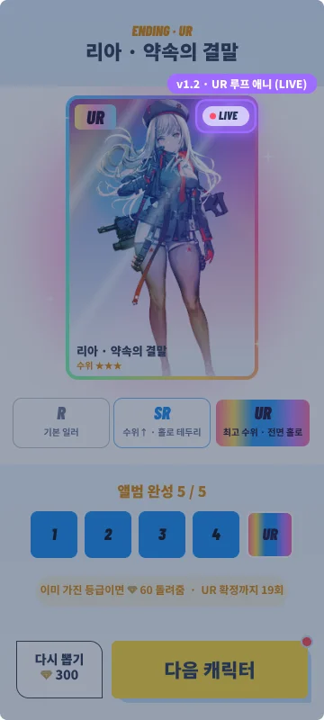
LITE는 엔딩 뽑기 · 이어하기가 없으니 6화면이 전부. 화면은 1 플로우의 스토리보드 바로 아래에서 비교.
| 항목 | 정식 | LITE |
|---|---|---|
| 사진 1장 | 3판 깨면 1장 | 판마다 +20% (5판 = 1장) |
| 다음 사진 열림 | 젬 (첫 사진 무료) | 젬 (첫 사진 무료) |
| 엔딩 | 엔딩 뽑기 (R/SR/UR) | 없음 — 사진 4장이 끝 |
| 실패 시 | 이어하기 젬 150 (흐름 밖) | 바로 무료 재도전 |
| 결제 지점 | 사진 열기 · 엔딩 뽑기 · 이어하기 · 되돌리기 | 사진 열기 (+ 되돌리기) |
| 로비 · 관계 | 로비 + 챕터 맵 | 챕터 목록 + 챕터 맵 |
| 화면 원칙 | 화면당 핵심 정보 1~2개 | 화면당 버튼 1개 |
| 판단 | 캐릭터 애착 · 결제 동기 강함 | 개발 가장 빠름 · 매 판 보상 촘촘 / 결제자당 매출 상한 낮음 (캐릭터당 젬 450) |
출시 전에 대응을 정해 둔 것만 적음.